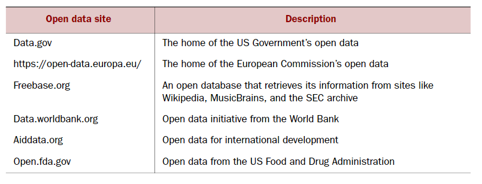
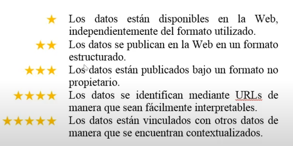
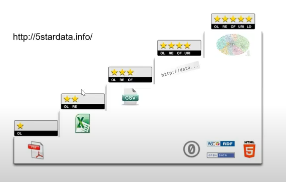
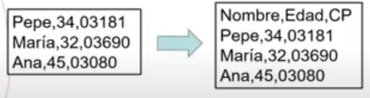
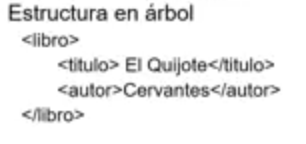
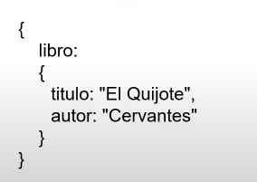

FORMATO DE DATOS¶
Datos abiertos¶
Son datos libremente accesibles y reutilizables, con la única condición de la atribución (mencionar la organización). Tienen unas características legales de licencia, protección de datos, etc.
Tabla de proveedores de datos abiertos

En 2010, el experto británico Tim Berners-Lee formuló el modelo 5 estrellas para animar a la sociedad, en particular a los encargados de los datos gubernamentales, a abrir sus bases de datos, pretende favorece la reutilización de los datos. Este modelo puntua los datos según su nivel de reutilización y acceso.


Datos abiertos del gobierno de España
Formato de datos¶
CSV¶
Comma Separated Values (valores separados por comas). Requiere que cada elemento de nuestro conjunto se presente en una línea. Dentro de esa línea, cada uno de los atributos del elemento debe estar separado por un único separador, que habitualmente es una coma, y seguir siempre el mismo orden. Además, la primera línea del fichero, a la que llamaremos cabecera, no contiene datos de ningún elemento, sino información de los atributos. Si el campo contiene alguna coma, utilizaremos un delimitador como por ejemplo " ".


XML¶
Extensive Markup Languaje (lenguaje de marcas extensible). Es un lenguaje de etiquetas utilizado para almacenar datos de forma estructurada.

JSON¶
JavaScript Object Notation, es un formato muy utilizado hoy en día, tiene el mismo propósito que el XML que es el intercambio de datos pero no utiliza las etiquetas abiertas y cerradas, sino que pretende que pese menos, es decir que ocupe menos espacio.

Avro¶
Es un formato de almacenamiento basado en filas para Hadoop. Avro se basa en esquemas. Cuando los datos .avro son leídos siempre está presente el esquema con el que han sido escritos. Avro utiliza JSON para definir tipos de datos y protocolos. Es el formato utilizado para la serialización de datos ya que es más rápido y ocupa menos espacio que los JSON, la serialización de los datos la hace en un formato binario compacto.
Parquet¶
Es un formato de almacenamiento basado en columnas para Hadoop. Fue creado para poder disponer de un formato de compresión y codificación eficiente. El formato Parquet está compuesto por tres piezas:
- Row group: es un conjunto de filas en formato columnar.
- Column chunk: son los datos de una columna en grupo. Se puede leer de manera independiente para mejorar las lecturas.
- Page: es donde finalmente se almacenan los datos, debe ser lo suficientemente grade para que la compresión sea eficiente.